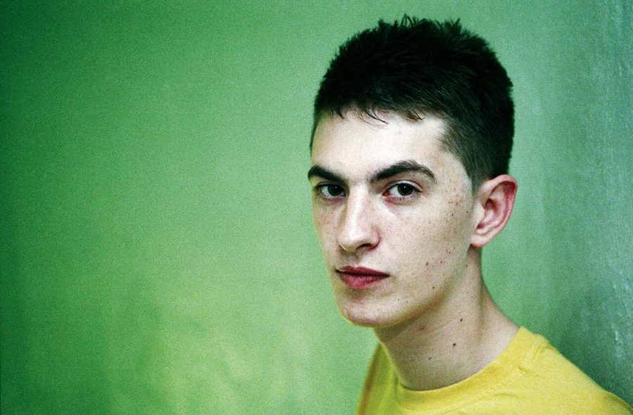

Skream on "awful" Boiler Room set: "I was clearly smashed"



There’s a lot to be said for a little old fashioned humility. On Monday night, Skream’s Boiler Room set – which had been streamed live from Austin, Texas during the annual South By Southwest music conference back in March – was uploaded to YouTube. Tens of thousands of eyeballs from around the world are generally glued to Boiler Room broadcasts, though this time, Skream’s performance has been drawing attention for all the wrong reasons. As Boiler Room put it: “Probably the most talked about set we’ve ever had.”
“So I’m getting a lot of stick because of my Ray Ban x Boiler Room set,” Skream took to his Facebook page to acknowledge today.
“1. I know it’s an awful mix.
2. Yes I was clearly smashed.
3. I’ve apologized already for what happened.”
Skream’s set was cut off a little earlier than he was seemingly happy with, with the audio from the mixer and the microphone cut off. When the MC had stepped up to announce the end of the broadcast, Skream showed his resistance by continuing to play, and subsequently jumping on the mic himself to hilariously slur at the audience. “if I don’t wake up on somebody’s floor, face down in dog piss, I haven’t had a good night.”
After stubbornly continuing to play for a few more minutes, the sound was eventually cut. Skream showed his displeasure by standing on the desk, shrugging his shoulders, before stepping down and promptly unplugging the CDJ and handing it into the crowd. As you do.
While Boiler Room have snipped some of the offending footage from the recording that’s been posted online, you can check out some of the other silliness from the half hour below.
The rumour mill was in full force earlier this week with speculation on what exactly happened. Some of the gossip included that Skream had redlined his mixer repeatedly, and of course that he had been drunk. However, the PA announcement shortly before the end of the broadcast, “Five minutes left tonight”, would suggest it was most likely related to time constraints with the Boiler Room stream itself.
The set itself started off on a solid note, full of four-on-four house grooves Skream has recently adopted as a replacement to the dubstep that he’s made his name with. However, at around 17 minutes into the half hour YouTube upload, some sloppy mixing does indeed stagger in. However, there’s little to suggest that his set was so bad that it warranted being cut short.
“People judging for that can do so, I’ve proved I can DJ too many times,” Skream told his Facebook followers. “If you wanna say I’m a shit DJ then cool. Anyone who was at my ‘Skreamizm’ show at Barcelona the day before knows this isn’t the case.”
The controversy comes at a time when many have otherwise been kept laughing by shenanigans on Boiler Room. A video emerged (then got set to ‘private’) that has compiled all those funny, awkward and embarrassing moments from the broadcast – stuff that could have happened on any typical night out, but in these cases, have been broadcast to the world.